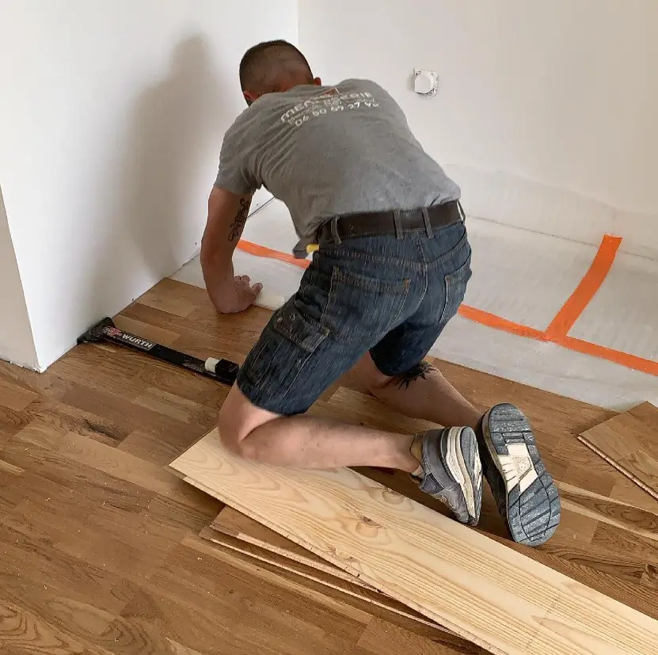

Menuisier-ébéniste à Guitinières
Le bois sur mesure, du plan à la pose.
Cuisines, terrasses, placo, dressings, meubles : Benoît Bertrand conçoit, fabrique et installe chaque projet lui-même, pour les particuliers et les professionnels de Haute-Saintonge.

Prestations
Un seul artisan pour tout votre intérieur, et l'extérieur aussi
Chaque réalisation est pensée pour vous et avec vous. Trois savoir-faire font la réputation de l'atelier :

Cuisine sur mesure
Conception, fabrication et pose, du plan à la dernière poignée.
Découvrir
Terrasse en bois
Bord de piscine, plage de spa ou prolongement du séjour.
Découvrir
Placo & isolation
Cloisons, doublages, plafonds et isolation des combles.
Découvrir-
 Dressing & placardsRangements ajustés au centimètre, même sous pente.
Dressing & placardsRangements ajustés au centimètre, même sous pente.
-
 Parquet flottantUn sol chaleureux, posé proprement jusqu'aux plinthes.
Parquet flottantUn sol chaleureux, posé proprement jusqu'aux plinthes.
-
 Fabrication de meublesTables, escaliers, claustras : des pièces uniques.
Fabrication de meublesTables, escaliers, claustras : des pièces uniques.
-
 Fenêtres de toit VeluxLumière et aération pour vos combles.
Fenêtres de toit VeluxLumière et aération pour vos combles.
-
 Portails & clôturesPortails, portillons et clôtures bois, alu ou PVC.
Portails & clôturesPortails, portillons et clôtures bois, alu ou PVC.
-
 Portes & fenêtresPortes d'entrée, baies vitrées, portes de garage.
Portes & fenêtresPortes d'entrée, baies vitrées, portes de garage.

L'artisan
Pas de production en série. Un artisan, ses mains et votre projet.
2B Menuiserie, c'est avant tout l'histoire de Benoît Bertrand, menuisier et ébéniste de formation. Depuis 2020, il crée des pièces uniques et durables, à l'image de ses clients, dans le respect du bois et du métier.
Ce qu'il propose, ce n'est pas une simple prestation : c'est un accompagnement, du premier croquis jusqu'au dernier réglage.
- Un artisan local, à votre écoute
- Un accompagnement personnalisé à chaque étape
- Des matériaux de qualité, durables et esthétiques
Méthode
De A à Z, sans mauvaise surprise
Rapide, efficace et fiable : la communication passe avant tout, à chaque étape du chantier.
On se rencontre
Je me déplace chez vous pour comprendre votre projet, vos envies et vos contraintes.
Je mesure et je conseille
Prise de cotes précise, choix des matériaux et des finitions, sans jargon.
Devis clair et gratuit
Un devis détaillé poste par poste, et un planning réaliste.
Fabrication et pose
Je fabrique et j'installe moi-même, puis je vérifie chaque réglage avec vous.
Réalisations
Quelques chantiers récents


Ils m'ont fait confiance
Avis client
L'entreprise 2B Menuiserie est très sérieuse. Je recommande pour les délais d'interventions ainsi que le travail réalisé qui est vraiment parfait.
Zone d'intervention
J'interviens dans toute la Haute-Saintonge
Depuis Guitinières, je me déplace dans un rayon de 50 km : du pays jonzacais au pays royannais, jusqu'aux portes de la Gironde et de la Charente.
- Guitinières
- Jonzac
- Saint-Genis-de-Saintonge
- Mirambeau
- Pons
- Archiac
- Montendre
- Gémozac
- Barbezieux
- Cozes
- Saintes
- Montguyon
- Blaye
- Royan
- Saint-Fort-sur-Gironde
- Montlieu-la-Garde
- Saujon
- …et alentours
Devis gratuit
Un projet en tête ? Parlons-en.
Chaque projet commence par une écoute attentive. Je me déplace gratuitement pour voir votre pièce, prendre les cotes et vous remettre un devis clair.